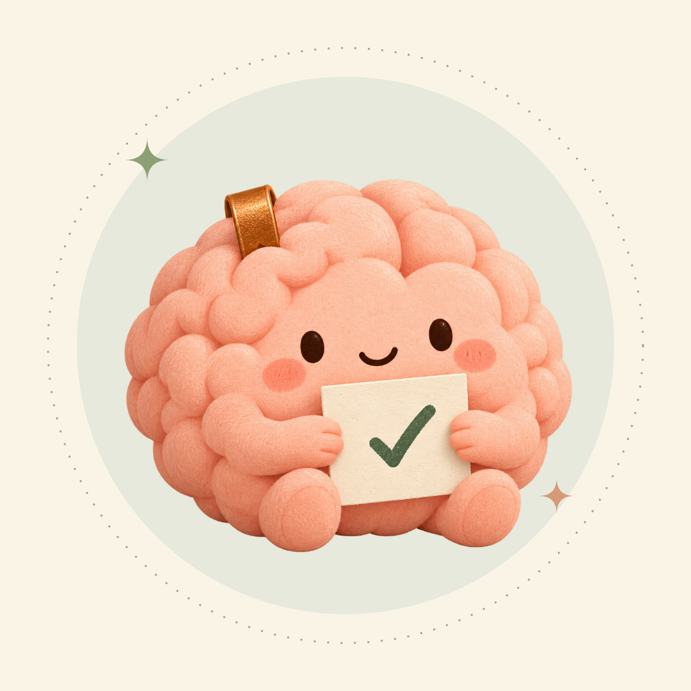
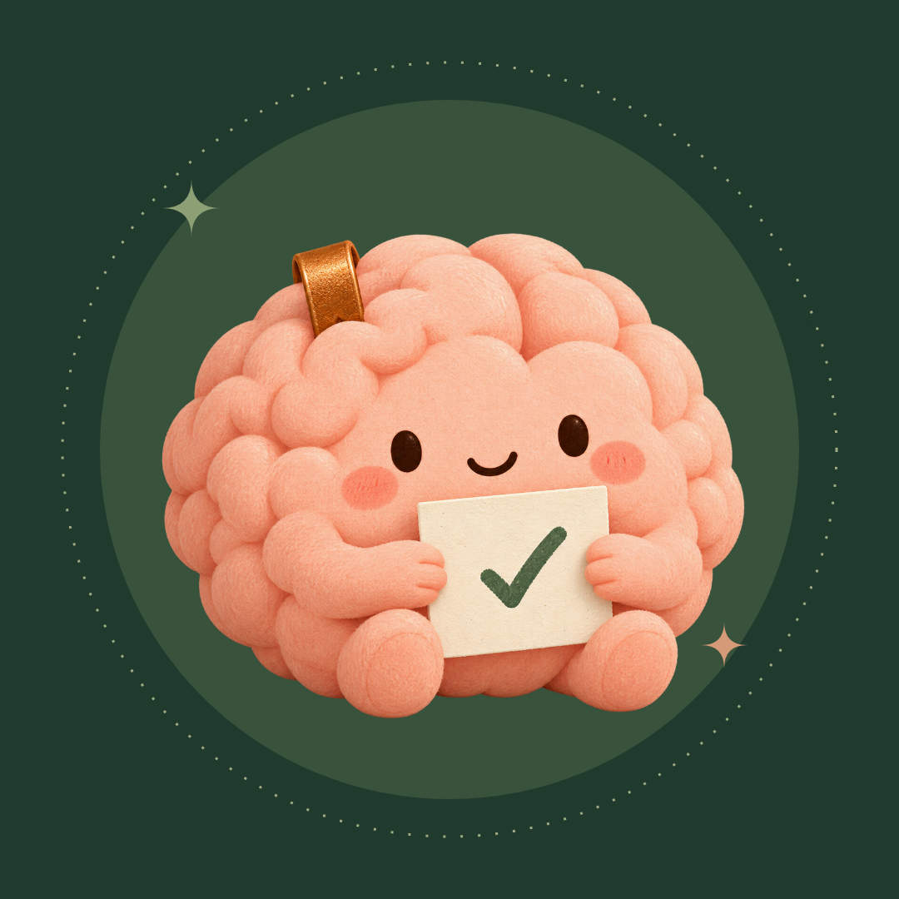
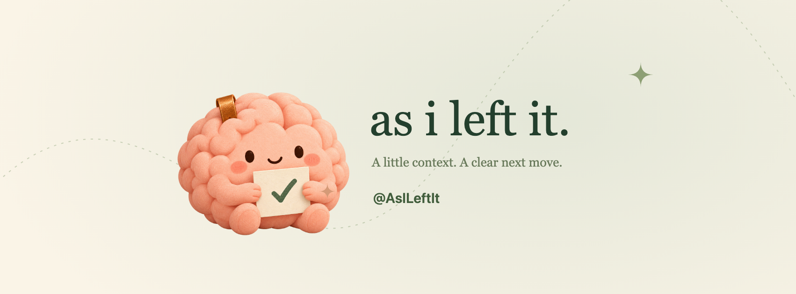
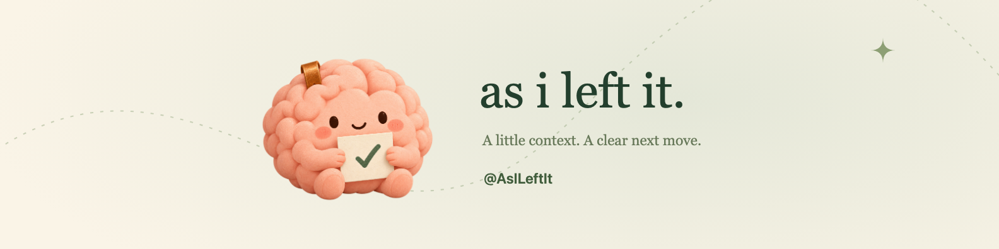
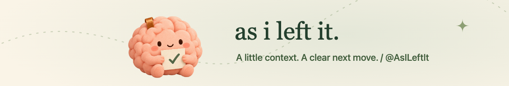

@AsILeftIt / social artwork
A little context.
The approved plush brain mascot, with warm paper, sage and forest-green accents.
Download the full kit
Instagram Profile
1080 × 1080 · PNG · Editable SVG

Instagram Profile Dark
1080 × 1080 · PNG · Editable SVG

Facebook Cover
1702 × 630 · PNG · Editable SVG

Linkedin Profile Banner
1584 × 396 · PNG · Editable SVG

Linkedin Company Banner
1128 × 191 · PNG · Editable SVG

PNG files are ready to upload. SVG files preserve editable layouts and live text; the plush character is an embedded PNG. Check the platform crop before saving; profile photos and responsive covers can overlap or crop differently. Nothing has been uploaded to social accounts.